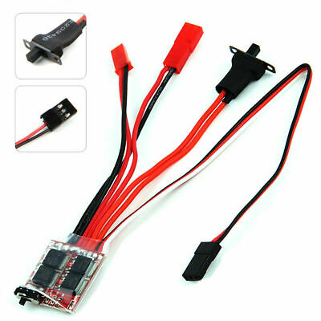

ESC - Electronic Speed Control

An electronic speed control allows a microcontroller (like an Arduino or Raspberry pi)
to control a dc motor. The protocol is similar to servo controller except there is a calibrate and an arm phase.
Here is some arduino code that can be used to control one (note a library is required)
Also note: pin 5 is the data pin in this example.
/*
ESC_Ramp
Based on the Sweep example in the Servo library, this allow a ramp up and down of the ESC speed based on the Min and Max values.
The Min and Max speed are defined so you can change them at one location and it will be used in the ramp as well.
*/
#include "ESC.h"
#define LED_PIN (13) // Pin for the LED
#define SPEED_MIN (1000) // Set the Minimum Speed in microseconds
#define SPEED_MAX (2000) // Set the Minimum Speed in microseconds
ESC myESC (5, SPEED_MIN, SPEED_MAX, 500); // ESC_Name (ESC PIN, Minimum Value, Maximum Value, Default Speed, Arm Value)
int oESC; // Variable for the speed sent to the ESC
void setup() {
pinMode(LED_PIN, OUTPUT); // LED Visual Output
myESC.arm(); // Send the Arm value so the ESC will be ready to take commands
digitalWrite(LED_PIN, HIGH); // LED High Once Armed
delay(5000); // Wait for a while
}
void loop() {
for (oESC = SPEED_MIN; oESC <= SPEED_MAX; oESC += 1) { // goes from 1000 microseconds to 2000 microseconds
myESC.speed(oESC); // tell ESC to go to the oESC speed value
delay(10); // waits 10ms for the ESC to reach speed
}
delay(1000);
for (oESC = SPEED_MAX; oESC >= SPEED_MIN; oESC -= 1) { // goes from 2000 microseconds to 1000 microseconds
myESC.speed(oESC); // tell ESC to go to the oESC speed value
delay(10); // waits 10ms for the ESC to reach speed
}
delay(5000); // Wait for a while befor restart
}